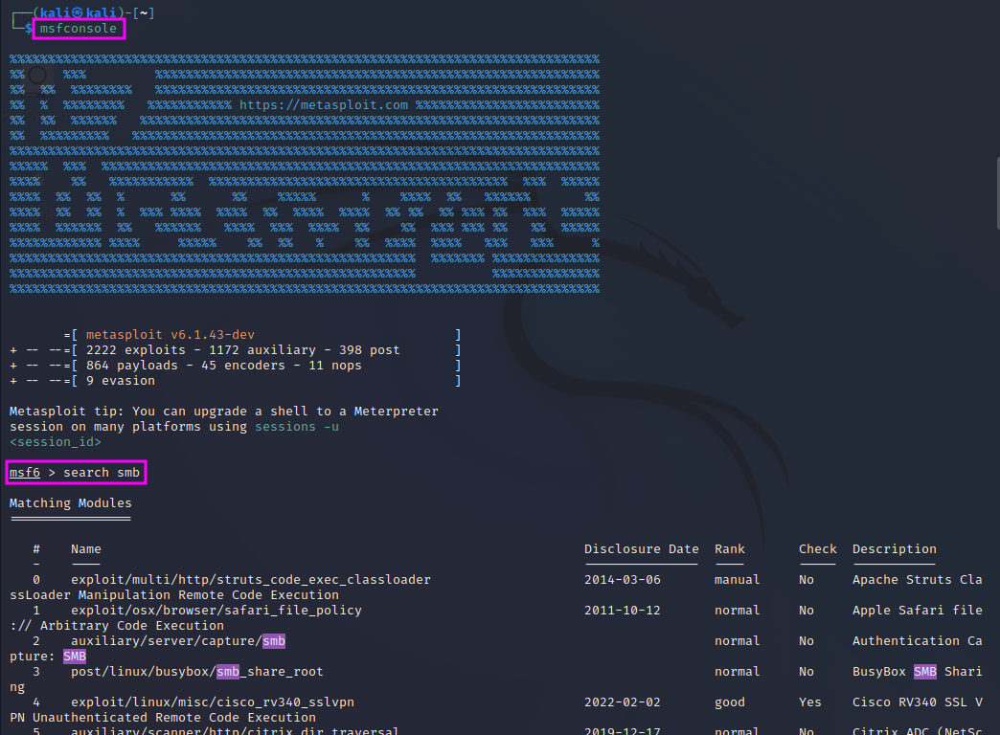
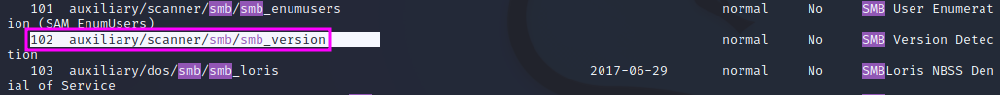
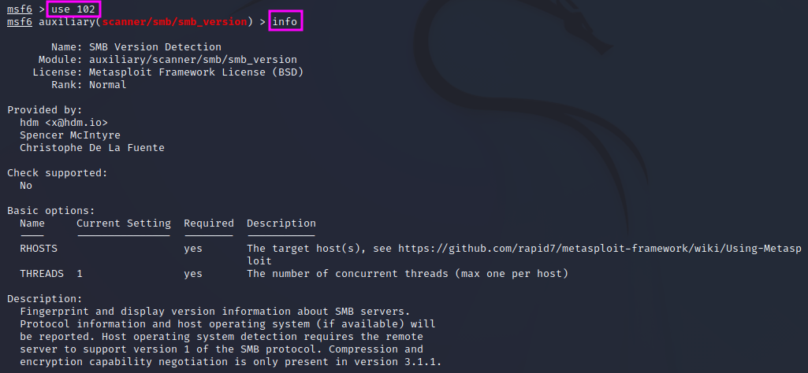
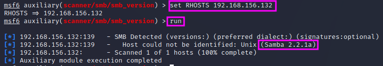
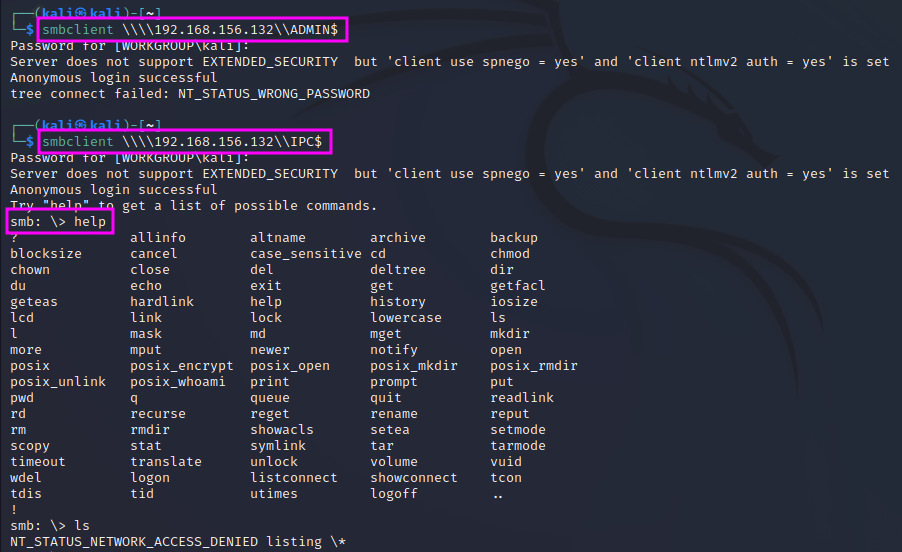

Enumerating SMB
SMB (Server Message Block) is a file-sharing protocol used in networks to up- and download files to a shared folder. SMB is typically used in work and internal environments.
In our Kioptrix pentest, the nmap scan revealed that a Samba server was accessible on the open port 139, and the workgroup name was MYGROUP. The scripts part of nmap revealed that the Samba version was probably SMB2, but we do not know the exact version yet, which would be valuable for an exploit. We can also try to connect to the SMB service and try to get access to files that contain valuable information.
We will use a tool called MetaSploit to get more information on the SMB version and to try to exploit it. We can start it by entering msfconsole on the command line. MetaSploit is very powerful. It offers tools for enumeration, exploitation and the post-exploitation stage as well. It has quite some learning curve, but it will be one of the most used tools for pentesters in the field.
{kind=link}
To find the available tools for SMB enumeration and exploitation we can simply search for the term “smb” on the MetaSploit command line with search smb. This will yield a very long list of available features (here: 131 hits!), from which we can pick one either by name or by id. The features are grouped by categories, which is helpful to find the sought functionality. In this case we are looking for a scanner for the SMB version, which we find under id 131.
{kind=link}
We can load this module now typing either use auxiliary/scanner/smb/smb_version or use 102, using the id. The MetaSploit command line prompt will then show that the respective module is active now. We can get some information about the usage of the module if we type info.
{kind=link}
There are two options that we need to set before we can start the enumeration, RHOSTS and THREADS, which has a default value of 1 and thus does not necessarily need to be set. RHOSTS in plural form means that we can assign a range of IP addresses in CIDR notation or just a single IP address, whereas RHOST would accept only a single IP address. In our case, we can set the values with set RHOSTS 192.168.156.132, followed by run to actually start the scan.
{kind=link}
The scan shows that the Samba server is version 2.2.1a, and we can use this now to search on the internet or our hacking tools whether we can find an exploit for this Samba version. This is an important finding that we should add to our pentest report. If one has gathered a lot of detailed information in the reconnaissance and enumeration phase, the exploitation is a rather easy part, according to TCM.
The next tool is called smbclient. It will try to connect to the file share. We can even try to do this anonymously. The command smbclient -L \\\\192.168.156.132\\ will connect to the SMB service, and the -L flag tells the program to list all shares. When we are asked for a password, we can try to just hit enter. As a result, we get a list of the shares: IPC$ and ADMIN$. We can then try to connect to these two shares directly and leave the -L switch away.
{kind=link}
We find that we cannot get access to the ADMIN$ share without a password, but we get access to IPC$. However, we cannot execute any commands once we are logged in anonymously, therefore this is also a dead end for now, and we can just exit the smb server with exit.